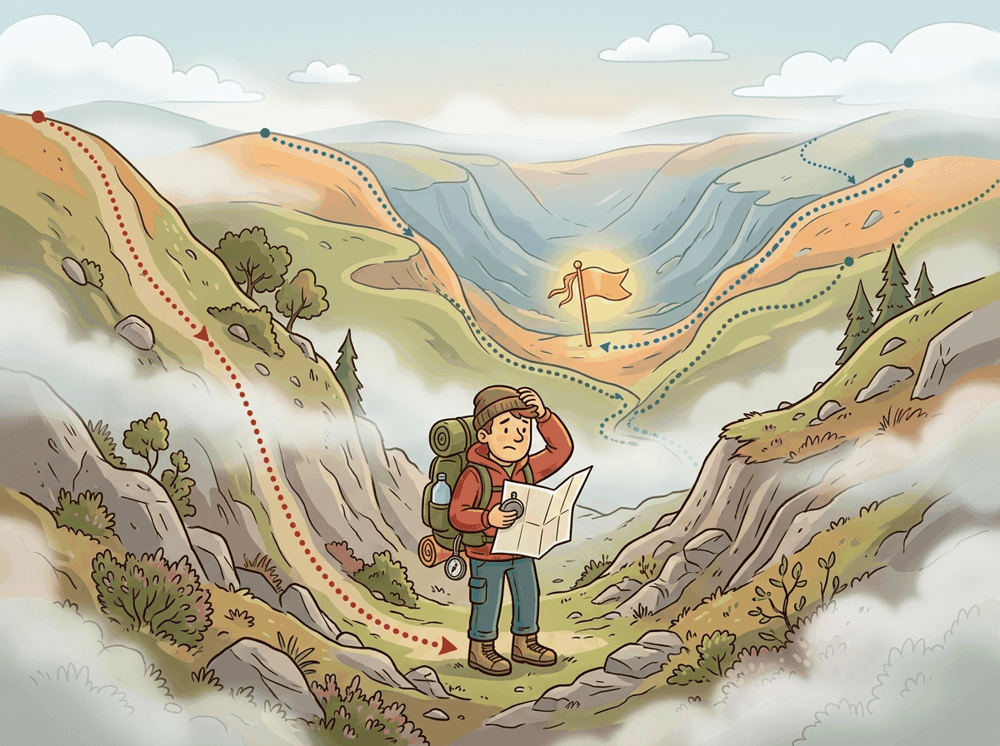
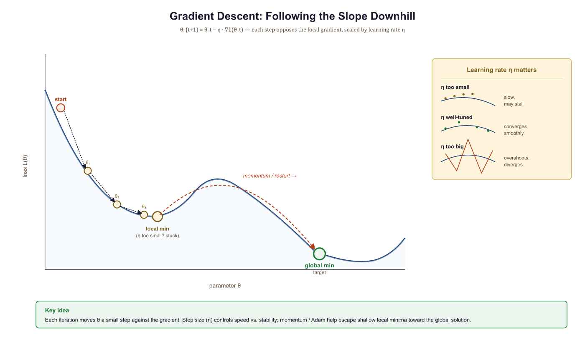
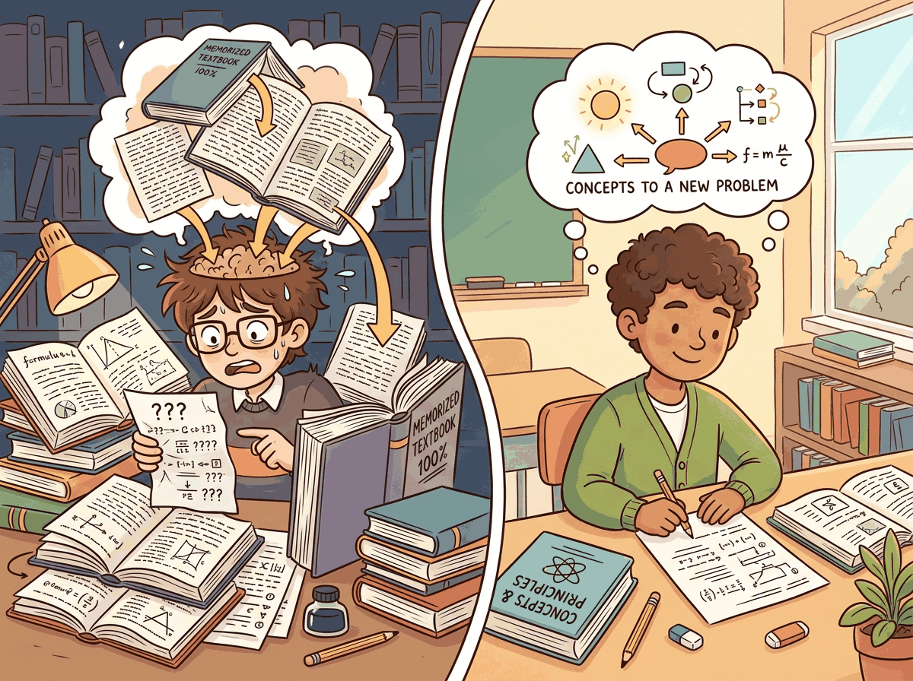
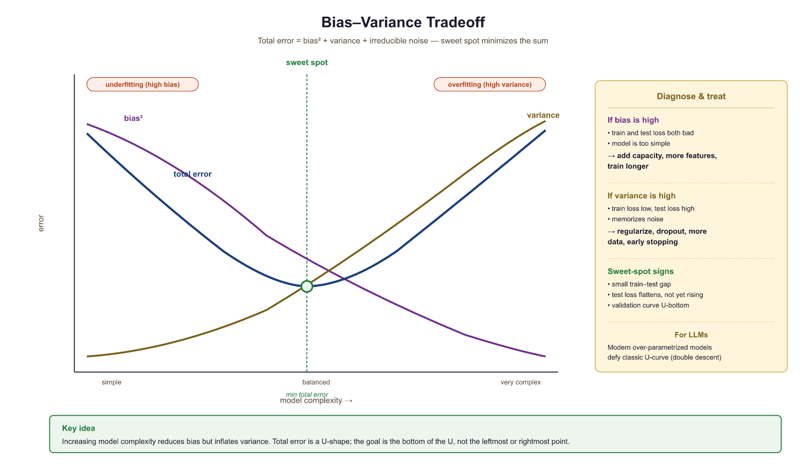

I spent three epochs optimizing my lunch order before realizing I was overfitting to yesterday's menu.
Tensor, Mildly Overfit AI Agent
Prerequisites
This section assumes comfort with high-school algebra and basic Python programming. No prior machine learning experience is required. If you are new to Python, any introductory tutorial covering variables, loops, and functions will provide sufficient background.
Why do we need ML basics for an LLM book? Large Language Models are, at their core, machine learning models. GPT, BERT, and every chatbot you have used are trained using the same fundamental toolkit: gradient descent to optimize parameters, loss functions to define success, and regularization to prevent memorization. When your LLM "hallucinates," that is a generalization failure. When you fine-tune a model, you are navigating the bias-variance tradeoff. When you choose training hyperparameters, you are making optimization decisions. This section builds the vocabulary and intuition you will rely on throughout the entire book. Think of it as learning to read sheet music before playing a symphony.
0.1.01.1 Feature Engineering and Representation
Every recommendation Netflix shows you, every spam filter that saves your inbox, and every voice assistant that (mostly) understands your requests depends on the same foundational step: translating messy real-world data into numbers a model can learn from. This translation process is called feature engineering, and it is arguably the most important step in any ML pipeline.
What Are Features?
A feature is a measurable property of your data expressed as a number (or vector of numbers). Consider predicting house prices. The raw listing might include "3 bedrooms, 1500 sq ft, built in 1990, located in Brooklyn." Each of these attributes, once converted to a numerical form, becomes a feature. The set of all features for one data point is called a feature vector.
Think of features as the "vocabulary" your model uses to understand the world. If you give a model only square footage, it can learn that bigger houses cost more. Add neighborhood, and it can learn that location matters. Add the year built, proximity to transit, and school ratings, and it gains a much richer understanding. The quality and relevance of your features set an upper bound on what any model can achieve.
Why Representation Matters
The same underlying information can be represented in dramatically different ways, and this choice directly affects learning. Consider dates: you could represent "January 15, 2024" as a single integer (Unix timestamp), as three separate features (year, month, day), or as cyclical features (sine and cosine of the day of year). For predicting seasonal patterns, the cyclical representation is far superior because it captures the fact that December 31st is close to January 1st.
A good representation makes the relationship between inputs and outputs simple enough for the model to learn. In deep learning (and particularly in LLMs), the model learns its own representations automatically. This is one of the key breakthroughs that makes deep learning so powerful, and we will explore it in Section 0.2.
Common Feature Engineering Techniques
- Normalization/Standardization: Scaling features to a common range (e.g., 0 to 1, or zero mean with unit variance) so no single feature dominates simply because it has larger numbers.
- One-hot encoding: Converting categorical variables (like "red," "green," "blue") into binary vectors.
- Polynomial features: Creating new features by combining existing ones (e.g.,
x²,x·y) to capture nonlinear relationships. - Log transforms: Compressing skewed distributions (common for prices, counts, and frequencies).
# Feature engineering in practice: preparing housing data
import numpy as np
# Raw data: [sq_ft, bedrooms, year_built, has_garage]
raw_data = np.array([
[1500, 3, 1990, 1],
[2200, 4, 2005, 1],
[ 800, 1, 1975, 0],
])
# Standardize: subtract mean, divide by std
means = raw_data.mean(axis=0)
stds = raw_data.std(axis=0)
standardized = (raw_data - means) / stds
print("Original first row:", raw_data[0])
print("Standardized first row:", standardized[0].round(3))In practice, scikit-learn handles feature preparation and model evaluation in a few lines. Code Fragment 0.1.2 below shows the library shortcut for the same workflow.
# Production equivalent using scikit-learn
from sklearn.model_selection import cross_val_score, KFold
from sklearn.linear_model import LinearRegression
model = LinearRegression()
cv = KFold(n_splits=5, shuffle=True, random_state=42)
scores = cross_val_score(model, X, y, cv=cv, scoring="neg_mean_squared_error")
print(f"Mean MSE: {-scores.mean():.4f} (+/- {scores.std():.4f})")cross_val_score handles the split, fit, and scoring loop internally, letting you focus on model selection rather than plumbing.Notice how standardization brings all features to a comparable scale. Without this step, the "square footage" feature (values in the thousands) would dominate "bedrooms" (values from 1 to 5) during optimization, not because it is more important, but simply because it is numerically larger.
0.1.01.2 Supervised Learning: Classification and Regression
Supervised learning is the backbone of modern ML. The idea is straightforward: you give the model examples of inputs paired with correct outputs, and it learns the mapping between them. This is analogous to learning from a textbook that has an answer key. You study the problems, check your answers, and gradually improve.
Regression: Predicting Numbers
In regression, the output is a continuous number. Predicting house prices, stock returns, temperature, or the probability that a user clicks an ad: all regression tasks. The model produces a numeric prediction, and we measure how far off it is from the true value.
Classification: Predicting Categories
In classification, the output is a discrete label. Is this email spam or not? Is this image a cat, dog, or bird? What sentiment does this sentence express? The model outputs a prediction (often as probabilities across categories), and we check whether it chose the correct label.
LLMs are, at their mathematical core, classifiers. At each step, an LLM predicts the most likely next token from a vocabulary of tens of thousands of options. The entire magic of language generation arises from repeated classification over sequences, as we explore in Chapter 4: Decoding and Text Generation.
The Supervised Learning Recipe
Every supervised learning system follows the same loop:
- Define a model with adjustable parameters (weights).
- Define a loss function that measures how wrong the model's predictions are.
- Optimize the parameters to minimize the loss on training data.
- Evaluate on held-out data to check generalization.
The rest of this section unpacks steps 2, 3, and 4 in detail.
Supervised learning requires human labels (input-output pairs). Unsupervised learning finds patterns in data without labels (clustering, dimensionality reduction). Self-supervised learning creates its own labels from the data: mask a word and predict it (Section 7.1), or predict the next word from all previous words (GPT). This is how every large language model is pre-trained. It is the reason LLMs can learn from the entire internet without human annotation.
0.1.01.3 Loss Functions and Optimization
Loss Functions: Defining "Wrong"
A loss function (also called a cost function or objective function) quantifies how far the model's predictions are from the true values. It is the compass that guides learning. Choosing the right loss function is critical because the model will optimize whatever you measure, even if that is not what you truly care about.
For regression, the most common loss is Mean Squared Error (MSE):
Squaring the errors does two things: it makes all errors positive (so they do not cancel out), and it penalizes large errors more severely than small ones. A prediction that is off by 10 contributes 100 to the loss, while one that is off by 1 contributes just 1.
For classification, the standard is Cross-Entropy Loss:
where $p_{i}$ is the model's predicted probability for the correct class. This loss is zero when the model assigns probability 1.0 to the right answer and increases sharply as that probability drops. Cross-entropy loss is exactly the loss used to train every GPT-style language model, as we will see in Chapter 6: Pretraining & Scaling Laws.
| Predicted Probability | Cross-Entropy Loss | Interpretation |
|---|---|---|
| 0.9 | 0.105 | Confidently correct |
| 0.5 | 0.693 | Coin flip |
| 0.1 | 2.303 | Mostly wrong |
| 0.01 | 4.605 | Catastrophically wrong |
A model that assigns P=0.01 to the correct answer pays 44 times more than one that assigns P=0.9. The loss has a magnifying glass for low-confidence predictions.
Why Gradient Descent Works
Now we arrive at the beating heart of machine learning. We have a loss function that tells us how wrong we are. We have a model with millions (or billions) of adjustable parameters. How do we find the parameter values that minimize the loss?
We could try random guessing, but the space is impossibly large. Instead, we use a beautiful insight from calculus: the gradient tells us which direction is uphill. If we walk in the opposite direction, we go downhill, reducing the loss.

Imagine you are blindfolded on a hilly landscape, and your goal is to find the lowest valley. You cannot see, but you can feel the slope under your feet. At each step, you feel which direction slopes downward most steeply and take a step that way. This is gradient descent.
Here, $\eta$ (eta) is the learning rate, which controls how big each step is. The gradient $\nabla L$ tells us the direction and steepness of the slope. By repeatedly taking small steps downhill, we converge toward a minimum of the loss function.

Variants of Gradient Descent
Computing the gradient over the entire dataset (called batch gradient descent) is expensive. In practice, we use stochastic approximations:
| Variant | Batch Size | Trade-off |
|---|---|---|
| Batch GD | Entire dataset | Precise gradients, very slow per step |
| Stochastic GD (SGD) | 1 sample | Very fast, very noisy gradients |
| Mini-batch SGD | 32, 64, 128, ... | Best of both worlds; the standard choice |
Mini-batch SGD is what you will encounter in virtually every deep learning training loop, including the PyTorch training loops in Section 0.3. It computes the gradient on a small random subset (mini-batch) of the data, providing a noisy but useful estimate of the true gradient. The noise actually helps: it allows the optimizer to escape shallow local minima and find better solutions.
# Simulating mini-batch SGD on a simple quadratic loss
import numpy as np
np.random.seed(42)
# True minimum is at w=3.0; loss = (w - 3)^2 + noise
w = 0.0 # starting parameter
lr = 0.1 # learning rate
print(f"Step 0: w = {w:.4f}, loss = {(w - 3)**2:.4f}")
for step in range(1, 6):
# Noisy gradient: true gradient + random noise (simulates mini-batch)
true_grad = 2 * (w - 3)
noisy_grad = true_grad + np.random.normal(0, 0.5)
w = w - lr * noisy_grad
loss = (w - 3) ** 2
print(f"Step {step}: w = {w:.4f}, loss = {loss:.4f}")Even with noisy gradients, the parameter w steadily moves toward the true minimum at 3.0. Each step is imprecise, but the overall trajectory converges. This is the core principle that scales all the way up to training models with billions of parameters.
The randomness in mini-batch SGD is not just a cost-saving compromise. It actually helps training by allowing the optimizer to escape shallow local minima that would trap batch gradient descent. This is one of the most counterintuitive results in optimization: a noisier compass can lead you to a better destination. The same principle underlies why stochastic sampling in text generation often produces better results than greedy decoding.
The learning rate is the single most important hyperparameter in optimization. Too large, and the steps overshoot the minimum, causing the loss to diverge. Too small, and training takes forever (or gets stuck). Modern practice uses learning rate schedulers that start with a larger rate and decay it over time, combining fast early progress with fine-grained later convergence.
0.1.01.4 Overfitting, Underfitting, and Regularization

Here is a scenario every ML practitioner encounters: your model achieves 99% accuracy on the training data, then you test it on new data and it drops to 60%. What happened? The model did not learn the underlying pattern; it memorized the training examples. This is called overfitting.
The Two Failure Modes
Underfitting occurs when the model is too simple to capture the patterns in the data. Imagine fitting a straight line to data that follows a curve. The model performs poorly on both training and test data because it lacks the capacity to represent the true relationship.
Overfitting occurs when the model is so complex that it fits the noise in the training data along with the signal. It performs brilliantly on training data but fails on new, unseen data. Imagine fitting a high-degree polynomial that passes through every training point, including the noisy ones. The resulting curve wiggles wildly between data points.
The goal of machine learning is not to minimize training error. It is to minimize generalization error: performance on data the model has never seen. Every technique in this section exists to bridge that gap.
Regularization: Keeping Models Honest
Every ML practitioner has experienced the five stages of overfitting grief: denial ("my 99% accuracy is real"), anger ("why does test accuracy say 55%?"), bargaining ("maybe I just need more epochs"), depression ("I should have become a botanist"), and acceptance ("fine, I'll add dropout").
Regularization is any technique that constrains the model to prevent overfitting. Think of it as adding a "simplicity penalty" to the learning process. The model must now balance two objectives: fitting the training data well and keeping its parameters from becoming too extreme.
L2 Regularization (Ridge / Weight Decay)
L2 regularization adds the sum of squared weights to the loss function:
The hyperparameter $\lambda$ controls the strength of the penalty. Large weights are penalized quadratically, which pushes all weights toward smaller values without forcing them to zero. This is the most common regularization in deep learning, where it is called weight decay. You will see weight decay appear again as a critical hyperparameter when tuning fine-tuning hyperparameters in Chapter 16.
L1 Regularization (Lasso)
L1 regularization adds the sum of the absolute values of the weights:
The key difference: L1 drives some weights to exactly zero, effectively performing feature selection. If you suspect many features are irrelevant, L1 can automatically identify and discard them. L2, by contrast, shrinks all weights but rarely eliminates any completely.
Dropout
Dropout is a regularization technique specific to neural networks, covered in more depth in Section 0.2. During training, each neuron is randomly "turned off" (set to zero) with some probability $p$ (typically 0.1 to 0.5). This prevents neurons from co-adapting: no single neuron can rely on another always being present, so each must learn independently useful features.
Think of dropout as training an ensemble of sub-networks. Each mini-batch sees a different random subset of neurons, and the final model effectively averages over all these configurations. At test time, all neurons are active (with their outputs scaled accordingly).
# Demonstrating overfitting vs. regularization
import numpy as np
from numpy.polynomial import polynomial as P
np.random.seed(0)
# Generate noisy data from a simple quadratic
x = np.linspace(0, 1, 10)
y_true = 2 * x ** 2 + 0.5 * x + 1
y_noisy = y_true + np.random.normal(0, 0.15, size=10)
# Fit polynomials of degree 2 (good) and degree 9 (overfit)
coeffs_2 = np.polyfit(x, y_noisy, 2)
coeffs_9 = np.polyfit(x, y_noisy, 9)
# Evaluate on a test point outside training range
x_test = 1.2
y_test_true = 2 * x_test**2 + 0.5 * x_test + 1
pred_2 = np.polyval(coeffs_2, x_test)
pred_9 = np.polyval(coeffs_9, x_test)
print(f"True value at x={x_test}: {y_test_true:.3f}")
print(f"Degree-2 prediction: {pred_2:.3f} (error: {abs(pred_2 - y_test_true):.3f})")
print(f"Degree-9 prediction: {pred_9:.3f} (error: {abs(pred_9 - y_test_true):.3f})")The degree-2 polynomial generalizes well because its complexity matches the true underlying pattern. The degree-9 polynomial memorized the training data (including its noise) and produces an absurd prediction for an unseen input. This is overfitting in its purest form.
Who: ML engineer at a mid-size e-commerce company (12M monthly active users)
Situation: Building a product recommendation model to predict click-through rates from user browsing history features.
Problem: The model achieved 0.92 AUC on training data but only 0.61 AUC on the production holdout set, a textbook overfitting gap of 0.31.
Dilemma: The team debated whether to collect more data (expensive, 3 months of logging), simplify the model (risk losing signal), or add regularization (quick but might hurt training performance).
Decision: They applied L2 regularization (weight decay of 0.01) and dropout (rate 0.3) to their neural network, keeping the same architecture.
How: Added weight_decay=0.01 to the Adam optimizer and inserted nn.Dropout(0.3) after each hidden layer. Training took the same wall-clock time.
Result: Training AUC dropped to 0.84, but holdout AUC jumped to 0.79. The overfitting gap shrank from 0.31 to 0.05, and click-through rate in production A/B testing increased by 14%.
Lesson: Regularization is often the fastest and cheapest way to close a train/test performance gap. Try it before collecting more data or redesigning the architecture.
We have seen overfitting in action and learned techniques to combat it. But why does overfitting happen in the first place? There is a deeper mathematical framework that explains the fundamental tension between model simplicity and model flexibility. Understanding this framework will sharpen your intuition for every modeling decision you make throughout this book.
0.1.01.5 Bias-Variance Tradeoff and Generalization Theory
The bias-variance tradeoff is one of the most important theoretical frameworks in machine learning. It explains why overfitting and underfitting occur and gives us a principled way to think about model complexity.
Decomposing Prediction Error
The total prediction error of a model can be decomposed into three components:
- Bias measures how far off the model's average prediction is from the true value. High bias means the model consistently misses the target because it is too simple (underfitting).
- Variance measures how much the model's predictions change when trained on different datasets. High variance means the model is overly sensitive to the specific training data it saw (overfitting).
- Irreducible noise is inherent randomness in the data that no model can eliminate.
Here is the fundamental tension: reducing bias (using a more complex model) typically increases variance, and reducing variance (simplifying the model) typically increases bias. The sweet spot is the model complexity where total error is minimized.
The classical bias-variance tradeoff predicts that very complex models should overfit badly. Yet modern deep neural networks (including LLMs with billions of parameters) often generalize well despite having far more parameters than training examples. This phenomenon, sometimes called the "double descent" curve, shows that test error can decrease again after the classical overfitting peak as model size continues to grow. The reasons include implicit regularization from SGD, the structure of real-world data, and the smoothness of the learned functions. The classical tradeoff remains a useful mental model for understanding underfitting and overfitting, but be aware that very large, overparameterized models can break the pattern. This is precisely why LLMs with 70 billion parameters can generalize from training data to novel tasks.
The bias-variance tradeoff is a special case of a universal principle in statistical physics and information theory: the tradeoff between model fidelity and model complexity. In physics, this appears as the minimum description length (MDL) principle, formalized by Rissanen (1978), which states that the best model is the one that achieves the shortest total encoding of the data plus the model itself. In Bayesian statistics, the same tension surfaces as Occam's razor via the marginal likelihood, which automatically penalizes overly complex models. The deep connection is that all these frameworks are minimizing the same quantity: a free energy functional that balances how well the model fits the observations against how many degrees of freedom it consumes. When you tune regularization strength in a neural network, you are navigating this same landscape that physicists explore when choosing between competing thermodynamic models.

Consider this analogy. Imagine asking multiple artists to draw a portrait from memory after briefly seeing a photograph. A stick-figure artist (high bias) will always produce an oversimplified drawing, regardless of the photo. A hyper-detailed artist (high variance) might capture every pore in one sitting but produce a wildly different portrait each time because they are also capturing fleeting shadows and reflections. The best artist has enough skill to capture the essential likeness (low bias) while remaining consistent across attempts (low variance).
Modern deep learning complicates the classical bias-variance tradeoff. Very large neural networks (including LLMs) are so overparameterized that they can memorize the training set perfectly, yet they still generalize well. This phenomenon, sometimes called "benign overfitting" or the "double descent" curve, is an active area of research that connects directly to scaling laws and the Chinchilla findings in Chapter 6. The classical framework remains a valuable mental model, but reality is richer than the simple U-shaped curve suggests.
0.1.01.6 Cross-Validation and Model Selection
You have several candidate models, each with different hyperparameters (learning rate, regularization strength, model complexity). How do you choose the best one? You cannot use training performance because that rewards overfitting. You need a reliable estimate of generalization performance.
The Train/Validation/Test Split
The simplest approach: split your data into three parts.
- Training set (60-80%): Used to fit the model parameters.
- Validation set (10-20%): Used to tune hyperparameters and select the best model.
- Test set (10-20%): Used exactly once at the end to report final performance. This is your unbiased estimate of generalization.
Never tune your model based on test set performance. The moment you use test results to make modeling decisions, the test set becomes a validation set, and your reported performance is no longer an unbiased estimate. Many published results in ML are overly optimistic because of this subtle mistake.
K-Fold Cross-Validation
When data is limited, a single train/validation split may not be representative. K-fold cross-validation addresses this by rotating the validation set across the data:
- Split the data into $K$ equal folds (typically 5 or 10).
- For each fold: train on the other $K-1$ folds, evaluate on the held-out fold.
- Average the $K$ evaluation scores.
This gives a more robust estimate of generalization because every data point serves as validation exactly once.
# K-Fold cross-validation from scratch
import numpy as np
np.random.seed(42)
# Simulated dataset: 100 points, simple linear relationship
X = np.random.randn(100, 1)
y = 2.5 * X.squeeze() + 1.0 + np.random.randn(100) * 0.5
K = 5
fold_size = len(X) // K
indices = np.arange(len(X))
np.random.shuffle(indices)
fold_scores = []
for fold in range(K):
# Split indices
val_idx = indices[fold * fold_size : (fold + 1) * fold_size]
train_idx = np.concatenate([indices[:fold * fold_size],
indices[(fold + 1) * fold_size:]])
X_train, y_train = X[train_idx], y[train_idx]
X_val, y_val = X[val_idx], y[val_idx]
# Fit simple linear regression: w = (X^T X)^{-1} X^T y
X_b = np.c_[np.ones(len(X_train)), X_train] # add bias column
w = np.linalg.lstsq(X_b, y_train, rcond=None)[0]
# Predict and score
X_val_b = np.c_[np.ones(len(X_val)), X_val]
preds = X_val_b @ w
mse = np.mean((preds - y_val) ** 2)
fold_scores.append(mse)
print(f"Fold {fold + 1}: MSE = {mse:.4f}")
print(f"\nMean MSE: {np.mean(fold_scores):.4f} (+/- {np.std(fold_scores):.4f})")The implementation above builds K-Fold cross-validation from scratch for pedagogical clarity. In production, use scikit-learn (install: pip install scikit-learn), which provides an optimized, battle-tested implementation:
The low standard deviation across folds (0.0383) tells us the model's performance is stable, which is a good sign. If one fold had dramatically different performance, that would suggest either a data quality issue or a model that is highly sensitive to the specific training examples.
Model Selection Strategy
In practice, model selection follows a systematic workflow:
- Define a set of candidate configurations (model types, hyperparameter grids).
- For each candidate, run K-fold cross-validation.
- Select the candidate with the best average validation score.
- Retrain the selected model on the full training set (train + validation).
- Report performance on the held-out test set.
In the LLM world, cross-validation is less common because datasets are enormous and models are expensive to train. Instead, practitioners rely on large held-out evaluation sets, benchmark suites (like MMLU or HumanEval), and qualitative evaluation. But the principle is the same: always evaluate on data the model did not train on.
0.1.01.7 Putting It All Together: The Full Pipeline
Let us trace a complete example that ties every concept together. Suppose you are building a spam classifier for emails.
- Feature engineering: Extract features like word counts, presence of suspicious phrases ("click here," "you won"), email length, number of links, and sender reputation.
- Model choice: Start with logistic regression (a linear classifier). This is a low-variance, potentially high-bias starting point.
- Loss function: Cross-entropy loss, since this is binary classification.
- Optimization: Mini-batch SGD with a learning rate scheduler.
- Regularization: L2 regularization (λ = 0.01) to prevent the model from assigning extreme weights to rare words.
- Evaluation: 5-fold cross-validation on the training set to tune λ, then final evaluation on the test set.
- Diagnosis: If training accuracy is 95% but test accuracy is 70%, you are overfitting. Consider stronger regularization, more data, or fewer features. If both training and test accuracy are 65%, you are underfitting. Consider a more powerful model (e.g., a neural network) or better features.
This exact workflow scales to far more complex settings. When researchers train GPT-style models, they follow the same logical steps at a vastly larger scale: represent text as token sequences (features), define cross-entropy loss over next-token prediction, optimize with Adam (a sophisticated variant of SGD that adapts the learning rate per parameter; we will explain Adam in detail in Section 0.3), apply dropout and weight decay, and evaluate on held-out benchmarks. In Section 0.3, you will implement this entire workflow in PyTorch, the framework used for most modern LLM research.
Show Answer
This is overfitting. The model memorized the training data rather than learning the underlying pattern. First steps to address it: add regularization (L2 weight decay, dropout), collect more training data, reduce model complexity, or use data augmentation. You might also check for data leakage (information from the test set inadvertently present in training).
Show Answer
Three reasons. First, mini-batch SGD is computationally efficient: it updates parameters after seeing a small subset rather than the entire dataset. Second, the noise acts as implicit regularization, helping the optimizer escape sharp local minima and find flatter minima that generalize better. Third, it enables parallelism on GPUs, which are optimized for batch matrix operations.
Show Answer
L1 regularization drives some weights to exactly zero, performing automatic feature selection. L2 regularization shrinks all weights toward zero but rarely eliminates any. Choose L1 when you suspect many features are irrelevant and want a sparse model. Choose L2 (the default in deep learning, called "weight decay") when all features are potentially useful and you simply want to prevent any single weight from becoming too large.
Show Answer
By tuning hyperparameters on the test set, the test set has effectively become a validation set. The reported 92% accuracy is no longer an unbiased estimate of generalization performance. The true performance on genuinely unseen data could be substantially lower. The correct approach: use a separate validation set (or cross-validation) for tuning, and touch the test set only once for final reporting.
Show Answer
A small model (e.g., a fine-tuned BERT-base) has higher bias: it may not be expressive enough to capture nuanced language patterns, leading to systematically poor predictions on complex tasks. A very large model (e.g., GPT-4 scale) has higher variance potential: it may overfit to fine-tuning data if the dataset is small, producing inconsistent outputs. The practical tradeoff involves matching model capacity to the amount and quality of available training data, plus applying appropriate regularization (dropout, weight decay, early stopping).
Before trying complex models, always train a simple baseline (logistic regression or a small MLP). This gives you a reference point for debugging and lets you verify your data pipeline is correct before investing GPU hours.
Key Takeaways
- Features are the model's vocabulary. Good feature representation makes learning easier. Deep learning's breakthrough is learning features automatically.
- Supervised learning is matching: given input-output pairs, learn the mapping. Classification predicts categories; regression predicts numbers. LLMs are fundamentally classifiers (predicting the next token).
- Loss functions define the goal. MSE for regression, cross-entropy for classification. The model optimizes whatever you measure, so choose carefully.
- Gradient descent works because calculus provides direction. The gradient points uphill; walk the other way. Mini-batch SGD is the practical workhorse: fast, parallelizable, and the noise helps generalization.
- Overfitting is the central enemy. A model that memorizes training data is useless. Regularization (L1, L2, dropout) constrains the model to learn patterns rather than noise.
- The bias-variance tradeoff is about model complexity. Too simple means underfitting (high bias). Too complex means overfitting (high variance). The sweet spot minimizes total error.
- Always evaluate on unseen data. Use train/validation/test splits or cross-validation. Never tune on the test set. This principle applies from logistic regression all the way to LLM benchmarks.
Exercises
An LLM can summarize a customer complaint in two seconds. (a) Name three classification or regression problems where calling an LLM is the wrong tool. (b) For each, name the classical ML technique that wins. (c) What single property of the problem drives the LLM-vs-classical decision?
Answer Sketch
(a) (i) High-volume tabular fraud scoring; (ii) low-latency click prediction in ad auctions; (iii) medical-image classification with structured pixel input. (b) Gradient-boosted trees (XGBoost/LightGBM) for tabular fraud, logistic regression or factorization machines for click-through, ResNet/EfficientNet for image classification. (c) The driving property is "is the input naturally text, or is text just a representation choice?" When the data is structured (numbers, pixels, graph nodes), classical or domain-specific deep models almost always beat LLMs on cost, latency, and accuracy. LLMs win when input is genuinely free-form text and reasoning over linguistic structure matters.
You train a model with capacity that you can scale from "too small" to "too large." Sketch the qualitative train and test error curves as a function of capacity. (a) Where is the optimal capacity? (b) Why does test error often fall again past the interpolation threshold for very large models? (c) What's the practical implication for LLM scaling?
Answer Sketch
(a) Optimal capacity is just past where train error stops dropping rapidly and test error reaches its first minimum; classically, this is the "sweet spot" before overfitting. (b) Past the interpolation threshold (where train error reaches zero), test error sometimes drops again ("double descent"): once you have many more parameters than data points, the optimization landscape becomes smoother and the implicit regularization of SGD favors simpler interpolating solutions. (c) For LLMs, this is why "more parameters helps even past the classical overfitting point" tends to be true: pretraining is not the regime where you should worry about classical overfitting at all; the bigger risk is data quality and contamination.
Modify a basic gradient-descent loop on a linear regression to add L2 weight decay manually (without using framework features). Show the 4-line change. State why this is mathematically equivalent to adding $\lambda \|w\|^2$ to the loss.
Answer Sketch
for x, y in batches:
pred = w @ x + b
grad_w = 2 * (pred - y) * x + 2 * lam * w # added L2 grad
w -= lr * grad_wThe added 2 * lam * w is exactly the gradient of $\lambda \|w\|^2$ with respect to w, so adding it during the parameter update is equivalent to having added the L2 penalty to the loss. Most modern optimizers expose this as weight_decay; for AdamW it's decoupled from the gradient (Section 7.5), which is the difference that makes AdamW better than Adam for Transformers.
You k-fold cross-validate a model and get 92% +/- 2% mean accuracy, then deploy. Production accuracy is 65%. List three common cross-validation mistakes that can produce this gap and a mitigation for each.
Answer Sketch
(1) Data leakage: a feature derived from the future (e.g., a timestamp-correlated label) leaks into training; CV looks great but production fails because the future isn't available. Mitigation: time-based splits and feature-leakage audits. (2) Distribution shift: CV samples from one population, production sees another. Mitigation: temporal holdout that simulates production, plus distribution-shift monitoring. (3) Selection bias in the dataset: only labeled examples that survived a noisy upstream filter are in the data. Mitigation: sample raw production traffic for a separate validation set, not just labeled examples. The general lesson: CV measures only what's in your dataset, not what your dataset is missing.
AutoML and neural architecture search (NAS) are reducing the need for manual feature engineering and model selection. Foundation models are increasingly used as feature extractors: instead of hand-crafting features, practitioners fine-tune pre-trained models or use their embeddings as rich, learned representations. The line between traditional ML and deep learning continues to blur, with gradient-boosted trees (XGBoost, LightGBM) still outperforming deep learning on many tabular datasets as of 2025.
What's Next?
In the next section, Section 0.2: Deep Learning Essentials, we build on these ML fundamentals by exploring deep learning essentials, including neural network architectures and training techniques.